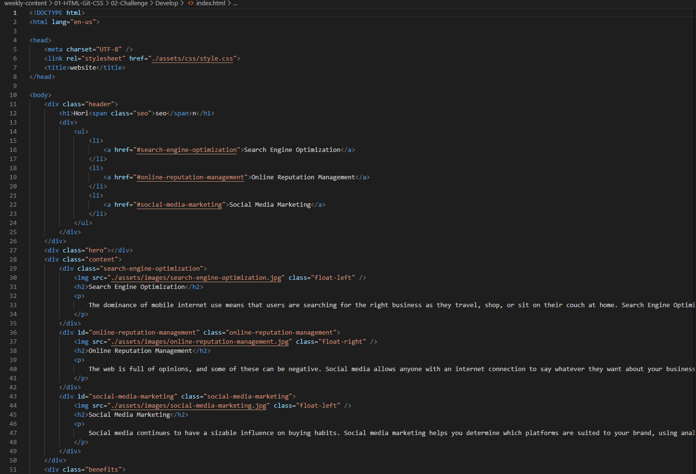
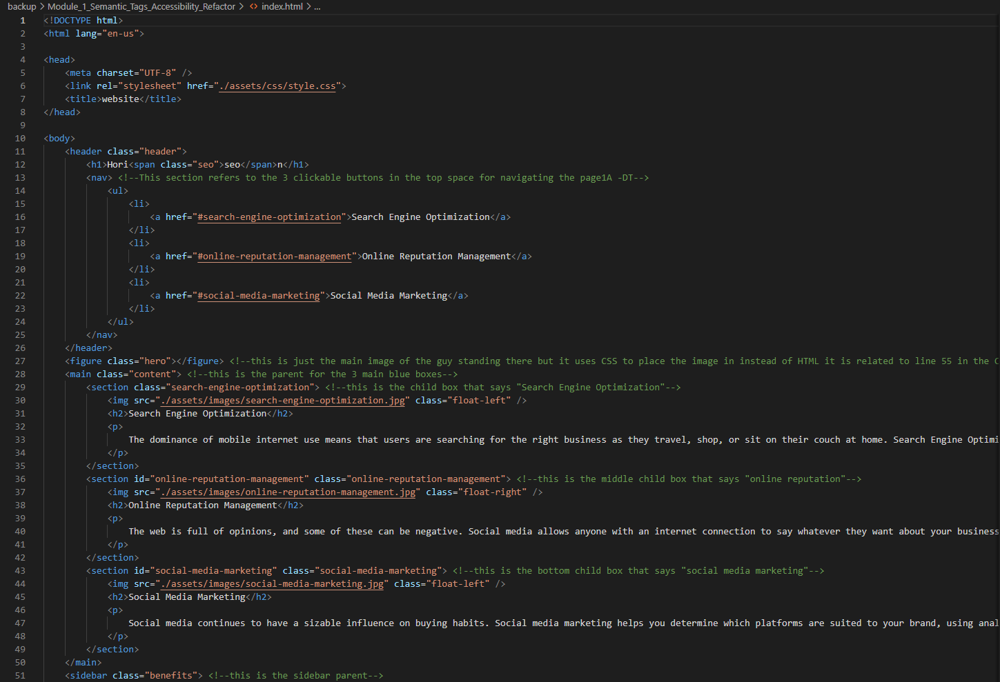

Background
I am Daniel Tran, i have always had a natrual curiousity for how things work. I
started out with toys, taking apart RC cars and playing with Lincoln Logs. I moved
onto Erector sets and Nitro RC cars. In high school, I began working on cars fixing
my car and woodworking. I learned how to do everything online to understand how
things work. I went to college and graduated with a B.S in Mechanical Engineering.
While in school, I got into motorcycles, working on them, modifiying and building
them. Mechanical systems came naturally to me.
Why Programming?
I tried taking a computer science elective in high school, the teacher was horrible
and left me with a bad intro experience. I had an amazing physics teacher, so I did
Mechanical Engineering. After graduating and working as the head engineer at a
local San Antonio motorcycle companyfor 3 years, I began to understand the value
and importance of computer literacy. I saw the potential for automation, expansion,
simplicity and complexity (at the same time), of being able to get computers to help with labor.
Hobbies:
- Automotive Mechanic
- Motorcycling
- Photography
- Woodworking
- DIY Home Projects
- Shooting
- Tennis
- 3D Printing
Skills:
- Excel
- Photoshop
- 3D Modeling (Solidworks, Alibre)
- Laser Engraving
- Machining (Manual Mill & Lathe)
- Engineering Drafting
- Applying 6 sigma and 5S
- Applying Agile management to projects
Project 1: Semantic tags and Accessibility
I converted all of the div tags to semantic tags. This allows users and co authors to more easily
understand the organization of the code. Semantic tags are more helpful in debugging and modifying
code because the logic of the page can be more easily understood and targeted. They help to convery
the meaning of the content.

Original code with only Div tags

Modified code with semantic tags
Project 2: Online Portfolio
I have created a website to host all of my works. It is updated as a live resume to show the work that
I have completed and allow others to review. This page includes all of my online social contact
information as well as my resume.